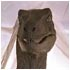
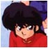
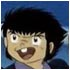
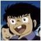
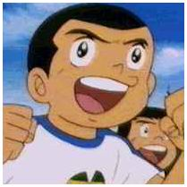
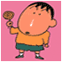

|
Dr.Mashirito
También Conocido como Suguru o Steevler.Gracias a su maestria con el balón y su gran capacidad goleadora se ganó el título de pichichi del equipo junto a jo-kriqui en la pasada temporada. |
|  |
Velociraptor
Tipico ariete con gran capacidad goleadora y dominio del balón, aúnque en la recta final de la temporada no ha tenido suerte frente la portería rival.
|
|  |
Ranma 1/2
Aúnque se ha perdido buena parte de la temporada por una grave lesión, cuando a jugado ha dejado entrever una gran capacidad defensiva y una majestuosa llegada a la área rival.
|
|
Jo-Kriki
El alma-mater del equipo, es un jugador muy polivalente y sabe dar espectáculo, en algunos medios se le ha comparado con Dios.
|
|  |
D.Derrick
A demostrado con creces su gran cualidad como cancervero y tambien con jugadas de gran maestria con el balon, durante toda la temporada se ha caracterizado como un gran puntal para la zaga de PR.
|
|  |
V.Derrick
Su trabajo en la defensa y el medio-campo no se ha visto oscurecido por las grandes figuras de este equipo, ya que ha demostrado una capacidad innata para este deporte, además, se le ha podido entrever una gran llegada a gol.
|
|  |
Bruce Arper
Conocido tambien como Don Cristal por ser propenso a sucumbir ante las lesiones y por escaquearse para no jugar como portero. Por otra parte su calidad, su gran visión de juego y su potente remate le hacen ser indispensable para el buen funcionamiento de este equipo. |
|  |
Bochan
Conocido por gran trabajo y dedicación en defensa, aunque se pueda pensar que su trabajo se vea renegado en un segundo termino, ha sabido hacerse un hueco entre la estrellas de este equipo ya que su cualidad brilla con luz propia. |
|
Vicky
También conocido como Obi Wan Kenowi o Dekta Kubitus. Ha demostrado una gran capacidad de liderazgo y se ha ganado un puesto como uno de los goleadores del equipo, aúnque buena parte de la temporada ha estado gafado en su cometido ha sido uno de los máximos goleadores de PR. |
|
Leming
También conocido como Wiched entre otros muchos... Ha sido el gran descubrimiento de la temporada, siendo el gran 'tapado' del equipo al actuar (aunque en cuentagotas) como gran recurso tras ausencias notorias en importantisimos partidos, logrando actuaciones de grandísimo mérito tanto de portero como ferreo defensa de PR. |
|
| Me gustaria agradecer a Cristina (alias, Kinoko) la colaboración prestada a esta sección y a la mejora del equipo en general. Como su esfuerzo ha sido notable y su tabajo no ha sido desapercivido, la junta directiva de PR ha decidio presentar el cargo de: colaborador/a honorífica de Pink Ribbon a la susodicha persona. |